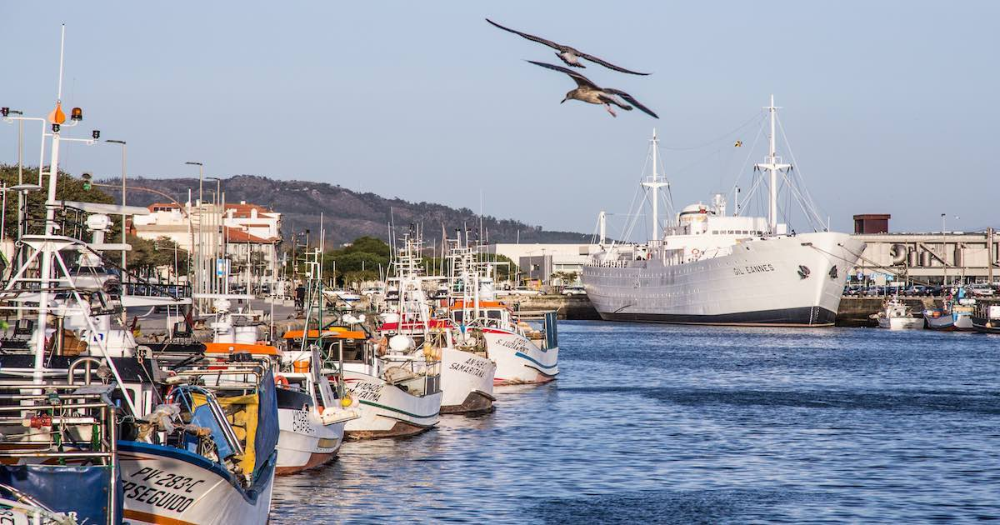

História Gastronômica de Viana do Castelo
Viana do Castelo, uma pitoresca cidade no norte de Portugal, tem uma história gastronômica rica e diversificada, que reflete a sua localização privilegiada entre o mar e a terra. Os pratos tradicionais desta região incorporam ingredientes frescos e técnicas culinárias ancestrais, transmitidas de geração em geração.
O peixe fresco é uma estrela indiscutível da gastronomia vianense, graças à proximidade com o Oceano Atlântico. Bacalhau, robalo, pescada e outras variedades são preparados de várias maneiras, desde grelhados simples até guisados mais elaborados, sempre realçando o sabor natural do mar.
Além do peixe, a carne também desempenha um papel importante na culinária local. Os rojões à moda do minho, um prato emblemático da região, combina pedaços suculentos de carne de porco com batata frita e temperos, resultando em uma iguaria reconfortante e cheia de sabor. Outros pratos de carne, como o cabrito à serra d’Arga, também são apreciados pelos locais e visitantes.
A riqueza dos produtos agrícolas da região é evidente em pratos como a sopa à lavrador, uma sopa rica e reconfortante feita com legumes frescos da época, que demonstra a simplicidade e a riqueza dos sabores locais. E, é claro, não se pode esquecer dos doces tradicionais, como as conhecidas rabanadas, o arroz doce e a torta de Viana, que adoçam o paladar dos que visitam esta encantadora cidade.
Em conclusão, a história gastronômica de Viana do Castelo é uma celebração da terra, do mar e das tradições culinárias que tornam esta cidade tão especial.